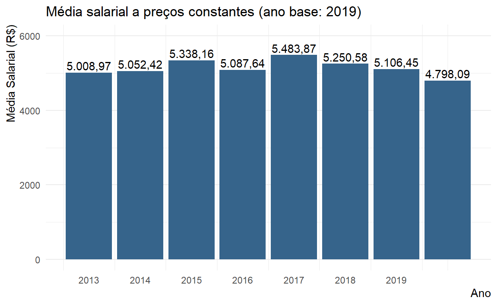
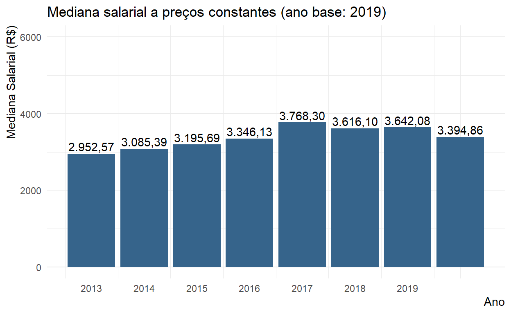
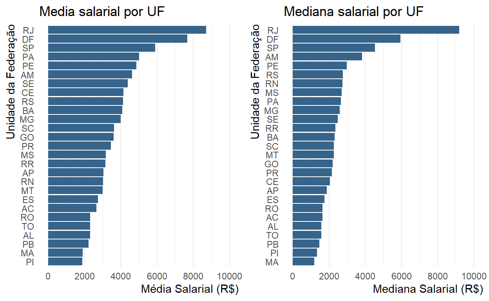
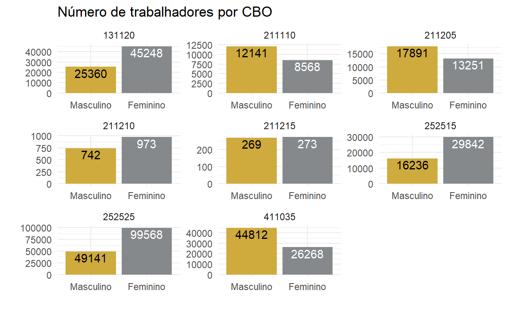
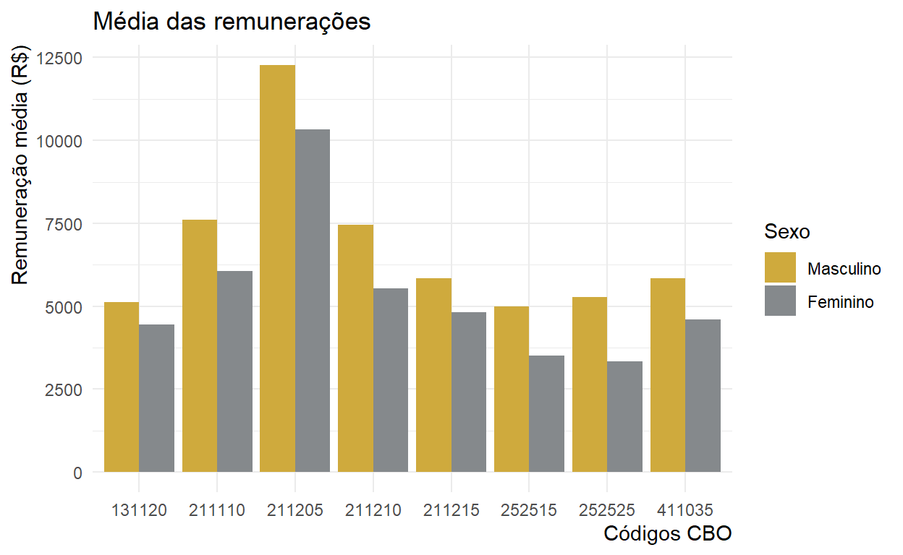
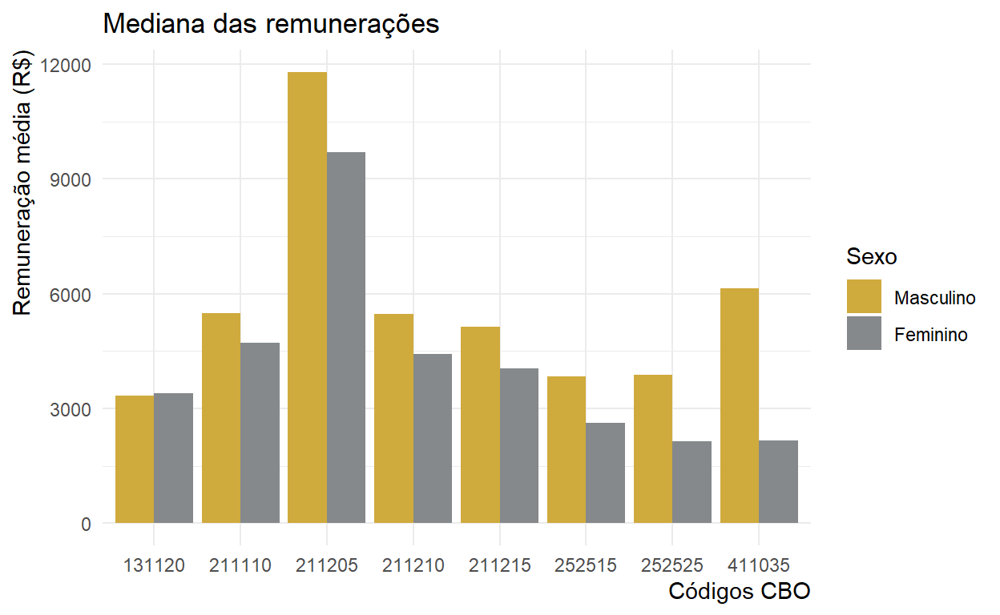
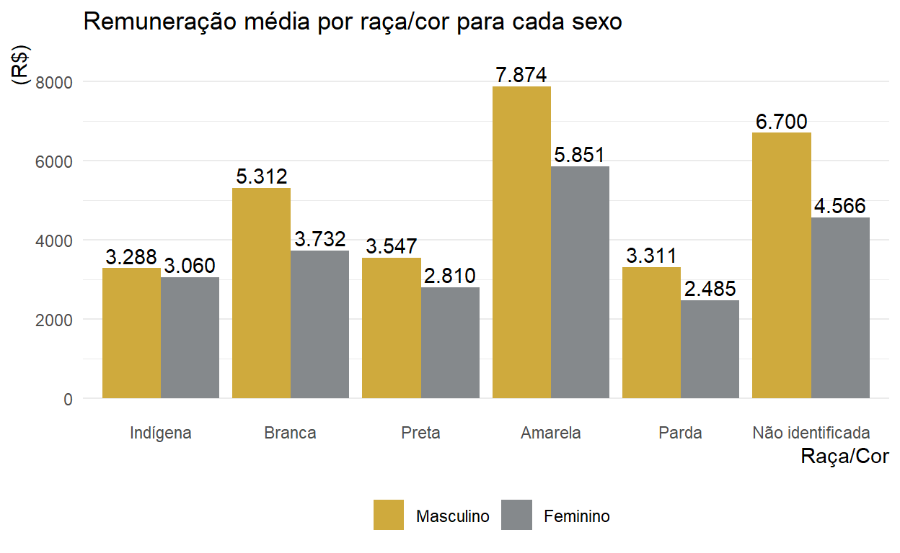
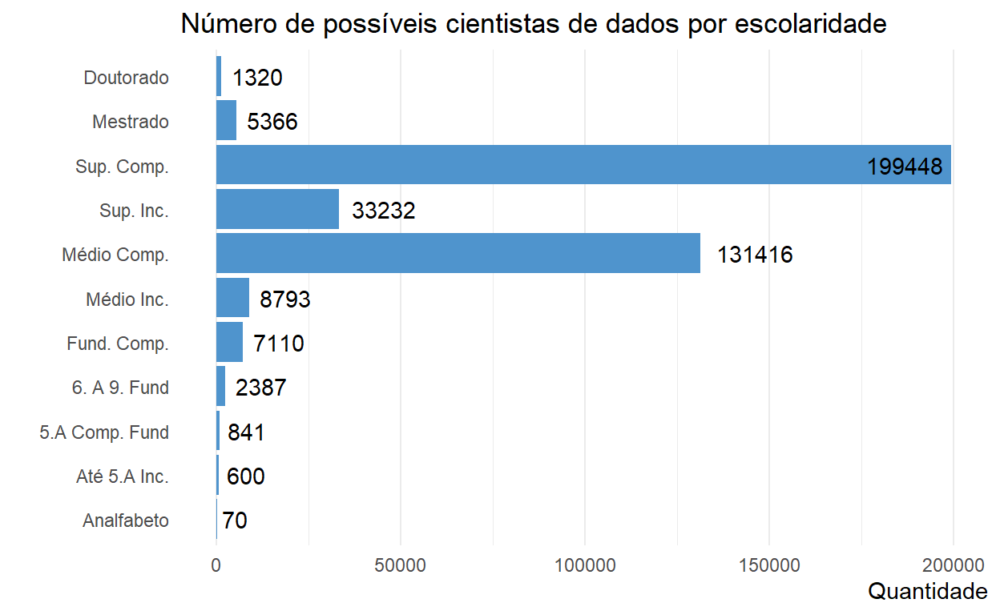
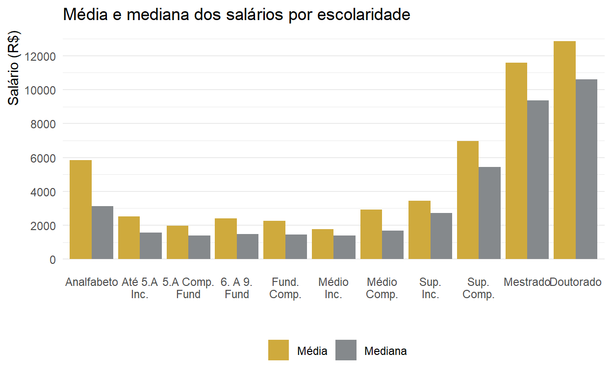

Esse estudo teve como objetivo analisar os salários de profissionais ligados à Ciência dos Dados atráves da base da RAIS. Esse projeto foi feito a partir da Semana Data Science na Prática do Curso-R.
De forma inicial, iremos chamar os pacotes necessários na análise de todo o projeto.
Vamos utilizar o datalake da iniciativa Base dos Dados.
Neste banco de dados estão disponíveis informações sobre o ano da admissão ou desligamento do funcionário, além de identificar o município e estado destas ocorrências a nível individual, entretanto, não é possível identificar quem são esses pessoas. Outros elementos disponíveis estão relacionados com o valor de remuneração do trabalhador e a área em que este trabalho ocorre, identificando características como o setor da empresa (através do código da CNAE) e o tamanho do estabelecimento (pelo número de empregados).
Os dados analisados neste projeto referencem às pessoas que (potencialmente) trabalham com ciência de dados. Por que “potencialmente” ? Existe um Código Brasileiro de Ocupações (CBO), que tem um cadastro de todas as ocupações formais no Brasil, entretanto o Cientista de Dados ainda não está classificado formalmente na CBO, por ser uma classificação ainda muito recente. Para contornar esse problema, serão utilizados alguns códigos da CBO que são relacionados a ciência de dados e filtrar da RAIS para obter os dados dessas pessoas, apontados a seguir:
Assim, queremos identificar qual o salário de quem trabalha com ciência de dados e algumas especificações dessa área, como locais com maiores salários médios e ocupações em que o cientista de dados possua maior remuneração.
codigos_cbo <- c( "252515", "252525", "211110",
# pesquisa/cientista
"211205", "211210","411035",
"131120","211215"
# ocupações estatísticas
)
Agora vamos carregar a base de dados da RAIS das ocupações que estão relacionadas à ciência de dados em sua totalidade a partir do ano 2013.
microdados_cd_tbl <- tbl(conexao, 'microdados_vinculos') %>%
select(everything()) %>%
filter(
ano >= 2013,
cbo_2002 %in% codigos_cbo
)
df_microdados_cd <- collect(microdados_cd_tbl)
# Deflacionando os valores da remuneração média (ano base = 2019)
df_microdados_cd <- df_microdados_cd %>%
dplyr::mutate(dates = as.Date(as.character(df_microdados_cd$ano),
format = '%Y'),
remuneracao_media_defl = deflate(valor_remuneracao_media,
dates,
real_date = '12/2019',
index = 'ipca'))
df_microdados_cd %>%
head(10) %>%
kbl(caption = 'Exemplo dos microdados - 10 primeiras observações da lista') %>%
kable_paper() %>%
scroll_box(height = '300px')
| ano | sigla_uf | id_municipio | tipo_vinculo | vinculo_ativo_3112 | tipo_admissao | mes_admissao | mes_desligamento | motivo_desligamento | causa_desligamento_1 | causa_desligamento_2 | causa_desligamento_3 | faixa_tempo_emprego | tempo_emprego | faixa_horas_contratadas | quantidade_horas_contratadas | id_municipio_trabalho | quantidade_dias_afastamento | indicador_cei_vinculado | indicador_trabalho_parcial | indicador_trabalho_intermitente | faixa_remuneracao_media_sm | valor_remuneracao_media_sm | valor_remuneracao_media | faixa_remuneracao_dezembro_sm | valor_remuneracao_dezembro_sm | valor_remuneracao_janeiro | valor_remuneracao_fevereiro | valor_remuneracao_marco | valor_remuneracao_abril | valor_remuneracao_maio | valor_remuneracao_junho | valor_remuneracao_julho | valor_remuneracao_agosto | valor_remuneracao_setembro | valor_remuneracao_outubro | valor_remuneracao_novembro | valor_remuneracao_dezembro | tipo_salario | valor_salario_contratual | subatividade_ibge | subsetor_ibge | cbo_1994 | cbo_2002 | cnae_1 | cnae_2 | cnae_2_subclasse | faixa_etaria | idade | grau_instrucao_1985_2005 | grau_instrucao_apos_2005 | nacionalidade | sexo | raca_cor | indicador_portador_deficiencia | tipo_deficiencia | ano_chegada_brasil | tamanho_estabelecimento | tipo_estabelecimento | natureza_juridica | indicador_simples | bairros_sp | distritos_sp | bairros_fortaleza | bairros_rj | regioes_administrativas_df | dates | remuneracao_media_defl |
|---|---|---|---|---|---|---|---|---|---|---|---|---|---|---|---|---|---|---|---|---|---|---|---|---|---|---|---|---|---|---|---|---|---|---|---|---|---|---|---|---|---|---|---|---|---|---|---|---|---|---|---|---|---|---|---|---|---|---|---|---|---|---|---|---|---|---|---|
| 2014 | RR | 1400050 | 10 | 1 | 1 | 2 | NA | 0 | 99 | 99 | 99 | 3 | 10.5 | 6 | 44 | 1400050 | 0 | 0 | NA | NA | 2 | 1.44 | 1045.45 | 3 | 1.38 | NA | NA | NA | NA | NA | NA | NA | NA | NA | NA | NA | 1000.00 | NA | NA | NA | NA | NA | 411035 | 91995 | 94308 | 9430800 | 7 | 50 | NA | 7 | 10 | 1 | 8 | 0 | 0 | NA | 4 | 1 | 3999 | 1 | NA | NA | NA | NA | NA | 2014-04-08 | 1426.7607 |
| 2014 | RR | 1400050 | 10 | 1 | 1 | 3 | NA | 0 | 99 | 99 | 99 | 3 | 9.9 | 6 | 44 | 1400050 | 0 | 0 | NA | NA | 2 | 1.38 | 1000.00 | 3 | 1.38 | NA | NA | NA | NA | NA | NA | NA | NA | NA | NA | NA | 1000.00 | NA | NA | NA | NA | NA | 411035 | 91995 | 94308 | 9430800 | 5 | 38 | NA | 7 | 10 | 1 | 2 | 0 | 0 | NA | 4 | 1 | 3999 | 1 | NA | NA | NA | NA | NA | 2014-04-08 | 1364.7336 |
| 2014 | RR | 1400100 | 30 | 1 | 0 | NA | NA | 0 | 99 | 99 | 99 | 8 | 367.9 | 5 | 40 | 1400100 | 0 | 0 | NA | NA | 10 | 16.81 | 12177.63 | 12 | 21.79 | NA | NA | NA | NA | NA | NA | NA | NA | NA | NA | NA | 15777.70 | NA | NA | NA | NA | NA | 211205 | 75116 | 84116 | 8411600 | 7 | 61 | NA | 9 | 10 | 1 | 9 | 0 | 0 | NA | 10 | 1 | 1015 | 0 | NA | NA | NA | NA | NA | 2014-04-08 | 16619.2203 |
| 2014 | RR | 1400100 | 30 | 1 | 0 | NA | NA | 0 | 99 | 99 | 99 | 4 | 14.7 | 5 | 40 | 1400100 | 0 | 0 | NA | NA | 4 | 2.16 | 1570.02 | 99 | 0.00 | NA | NA | NA | NA | NA | NA | NA | NA | NA | NA | NA | 0.00 | NA | NA | NA | NA | NA | 211205 | 75116 | 84116 | 8411600 | 5 | 30 | NA | 9 | 10 | 2 | 9 | 0 | 0 | NA | 10 | 1 | 1023 | 0 | NA | NA | NA | NA | NA | 2014-04-08 | 2142.6590 |
| 2014 | RR | 1400100 | 30 | 1 | 0 | NA | NA | 0 | 99 | 99 | 99 | 7 | 64.9 | 5 | 40 | 1400100 | 0 | 0 | NA | NA | 7 | 6.43 | 4661.69 | 9 | 8.51 | NA | NA | NA | NA | NA | NA | NA | NA | NA | NA | NA | 6164.24 | NA | NA | NA | NA | NA | 211205 | 75116 | 84116 | 8411600 | 5 | 37 | NA | 9 | 10 | 2 | 9 | 0 | 0 | NA | 10 | 1 | 1023 | 0 | NA | NA | NA | NA | NA | 2014-04-08 | 6361.9648 |
| 2014 | RR | 1400100 | 10 | 0 | 0 | NA | 4 | 21 | 99 | 99 | 99 | 2 | 5.2 | 6 | 44 | 1400100 | 0 | 0 | NA | NA | 3 | 1.52 | 1112.39 | 0 | 0.00 | NA | NA | NA | NA | NA | NA | NA | NA | NA | NA | NA | 0.00 | NA | NA | NA | NA | NA | 252525 | 74993 | 82911 | 8291100 | 4 | 25 | NA | 9 | 10 | 2 | 9 | 0 | 0 | NA | 4 | 1 | 2135 | 1 | NA | NA | NA | NA | NA | 2014-04-08 | 1518.1160 |
| 2014 | RR | 1400100 | 10 | 0 | 0 | NA | 8 | 11 | 50 | 99 | 99 | 5 | 28.5 | 6 | 44 | 1400100 | 120 | 0 | NA | NA | 2 | 1.41 | 1028.00 | 0 | 0.00 | NA | NA | NA | NA | NA | NA | NA | NA | NA | NA | NA | 0.00 | NA | NA | NA | NA | NA | 252525 | 74993 | 82911 | 8291100 | 5 | 33 | NA | 8 | 10 | 2 | 9 | 0 | 0 | NA | 1 | 1 | 2062 | 0 | NA | NA | NA | NA | NA | 2014-04-08 | 1402.9461 |
| 2014 | RR | 1400100 | 10 | 1 | 2 | 6 | NA | 0 | 99 | 99 | 99 | 3 | 6.9 | 6 | 44 | 1400100 | 0 | 0 | NA | NA | 1 | 1.00 | 724.00 | 2 | 1.00 | NA | NA | NA | NA | NA | NA | NA | NA | NA | NA | NA | 724.00 | NA | NA | NA | NA | NA | 211205 | 80152 | 85139 | 8513900 | 5 | 31 | NA | 9 | 10 | 2 | 8 | 0 | 0 | NA | 5 | 1 | 2062 | 0 | NA | NA | NA | NA | NA | 2014-04-08 | 988.0671 |
| 2014 | RR | 1400100 | 10 | 1 | 0 | NA | NA | 0 | 99 | 99 | 99 | 8 | 121.9 | 5 | 40 | 1400100 | 0 | 0 | NA | NA | 9 | 13.17 | 9542.16 | 10 | 13.34 | NA | NA | NA | NA | NA | NA | NA | NA | NA | NA | NA | 9659.10 | NA | NA | NA | NA | NA | 131120 | 85324 | 88006 | 8800600 | 7 | 58 | NA | 9 | 10 | 2 | 2 | 0 | 0 | NA | 7 | 1 | 3999 | 0 | NA | NA | NA | NA | NA | 2014-04-08 | 13022.5059 |
| 2014 | RR | 1400100 | 10 | 1 | 0 | NA | NA | 0 | 99 | 99 | 99 | 6 | 53.9 | 6 | 44 | 1400100 | 0 | 0 | NA | NA | 2 | 1.19 | 867.62 | 3 | 1.43 | NA | NA | NA | NA | NA | NA | NA | NA | NA | NA | NA | 1038.34 | NA | NA | NA | NA | NA | 252525 | 67199 | 66193 | 6619302 | 5 | 36 | NA | 6 | 10 | 2 | 8 | 0 | 0 | NA | 2 | 1 | 2062 | 1 | NA | NA | NA | NA | NA | 2014-04-08 | 1184.0701 |
Da tabela acima, identifica-se um trabalhador do sexo masculino (sexo = 1), na área de auxiliar de estatística e com uma remuneração média de R$ 1.045,45 para um total de 390.583 observações.
Em posse de informações como esta podemos avançar na análise dos salários dos cientistas de dados desde 2013. Nó tópico a seguir serão apresentados questionamentos adicionais que possam auxiliar na questão de quanto recebe uma pessoa que trabalha com Ciência de Dados ?
Quanto o salário médio varia no tempo?
Quanto o salário médio varia regionalmente?
Quanto o salário médio varia por característica das pessoas? - Gênero - Raça/Cor - Grau de instrução
df_ano <- df_microdados_cd %>%
group_by(ano) %>%
summarise(media_ano = mean(remuneracao_media_defl),
mediana_ano = median(remuneracao_media_defl))
ggplot(df_ano, aes(x = ano, y = media_ano))+
geom_col(fill = 'steelblue4')+
geom_text(aes(label = format(media_ano,
nsmall = 2,
digits = 1,
big.mark = '.',
decimal.mark = ','),
vjust = -0.3))+
labs(x = 'Ano', y = 'Média Salarial (R$)', title = 'Média salarial a preços constantes (ano base: 2019)')+
scale_y_continuous(limits = c(0,6000))+
scale_x_continuous(breaks = 2013:2019)+
theme_minimal()+
theme(panel.grid.major.x = element_blank(),
axis.title = element_text(vjust = 1.1, hjust = 1))

Identifica-se que, observando apenas o crescimento da remuneração média ao longo dos anos, houve um pico salarial no ano de 2017, atingindo R$ 5.483.87. Assim, constata-se que, de forma geral, o salário médio do cientista de dados (a preços constantes de 2019) se mantém em cerca de R$ 5.000,00.
Como no mercado de trabalho pode existir algumas poucas remunerações que são bem diferentes das demais (as observações outliers), vamos observar a mediana das remunerações, com o intuito de identificar algum indício de que exista distorção na distribuição das remunerações, uma vez que a mediana representa o valor numérico que separa a metade superior de um conjunto de sua metade inferior.
ggplot(df_ano, aes(x = ano, y = mediana_ano))+
geom_col(fill = 'steelblue4')+
geom_text(aes(label = format(mediana_ano,
nsmall = 2,
digits = 1,
big.mark = '.',
decimal.mark = ','),
vjust = -0.3))+
labs(x = 'Ano', y = 'Mediana Salarial (R$)', title = 'Mediana salarial a preços constantes (ano base: 2019)')+
scale_y_continuous(limits = c(0,6000))+
scale_x_continuous(breaks = 2013:2019)+
theme_minimal()+
theme(panel.grid.major.x = element_blank(),
axis.title = element_text(vjust = 1.1, hjust = 1))

Deste gráfico, podemos identificar que a mediana do conjunto de remunerações é relativamente menor do que os valores observado na média das remunerações, entretanto, com o passar do tempo a mediana salarial aumentou mais do que o observado com a média salarial, dando evidências de que mesmo havendo distorção salarial e excluindo o efeito de valores outliers, houve um aumento significativo na renda do cientista de dados (23%, no ano de 2019 em relação a 2013, já excluindo o efeito da inflação).
Esta distorção salarial pode estar relacionada, entre outros fatores, ao fato de que os códigos da CBO não identificam nenhuma hierarquia de cargo, não podendo se diferenciar nesta base de dados, por exemplo, um cientista de dados júnior de um cientista de dados pleno ou sênior.
Além disso, pode haver distorções entre os códigos da CBO utilizados, com algumas ocupações sendo mais bem remuneradas do que outras (caso que será estudado mais adiante), assim como, diferenças regionais, próxima hipótese a ser estudada.
df_ano %>%
kbl(digits = 2, caption = 'Média e mediana salarial por ano a preços constantes (ano base = 2019)') %>%
kable_paper()
| ano | media_ano | mediana_ano |
|---|---|---|
| 2013 | 5008.97 | 2952.57 |
| 2014 | 5052.42 | 3085.39 |
| 2015 | 5338.16 | 3195.69 |
| 2016 | 5087.64 | 3346.13 |
| 2017 | 5483.87 | 3768.30 |
| 2018 | 5250.58 | 3616.10 |
| 2019 | 5106.45 | 3642.08 |
| 2020 | 4798.09 | 3394.86 |
| sigla_uf | media_uf | mediana_uf |
|---|---|---|
| AC | 2653.161 | 1629.272 |
| AL | 2300.513 | 1584.964 |
| AM | 4625.566 | 3830.520 |
| AP | 3040.034 | 1881.368 |
| BA | 4081.393 | 2307.674 |
| CE | 4137.112 | 2049.516 |
| DF | 7669.432 | 5947.539 |
| ES | 2739.243 | 1756.881 |
| GO | 3613.911 | 2209.998 |
| MA | 1908.077 | 1182.362 |
| MG | 4000.365 | 2582.620 |
| MS | 3182.490 | 2704.479 |
| MT | 2994.833 | 2259.989 |
| PA | 5020.044 | 2660.518 |
| PB | 2232.446 | 1457.862 |
| PE | 4869.492 | 2987.156 |
| PI | 1886.925 | 1342.721 |
| PR | 3451.283 | 2158.205 |
| RJ | 8704.632 | 9188.656 |
| RN | 3021.090 | 2749.472 |
| RO | 2315.762 | 1641.629 |
| RR | 3144.404 | 2342.876 |
| RS | 4135.914 | 2753.498 |
| SC | 3638.149 | 2268.005 |
| SE | 4395.160 | 2476.440 |
| SP | 5898.167 | 4535.110 |
| TO | 2305.233 | 1573.539 |
Através de um gráfico, abaixo, podemos identificar mais facilmente que o Rio de Janeiro, Distrito Federal e São Paulo possuem as maiores remunerações médias e medianas. Com estes 2 gráficos pode-se perceber uma grande disparidade salarial entre algumas localidades, sendo observado salários médios de R$ 8704.63 e R$ 7669.43, no RJ e DF, respectivamente, enquanto que no Piauí e Maranhão, os salários médios foram de R$ 1908.08 e R$ 1886.93, respectivamente.
g1 <- df_uf %>%
dplyr::mutate(
sigla_uf = fct_reorder(sigla_uf, media_uf)
) %>%
ggplot(aes(y = sigla_uf, x = media_uf))+
geom_col(fill = 'steelblue4')+
labs(y = 'Unidade da Federação', x = 'Média Salarial (R$)',
title = 'Media salarial por UF')+
scale_x_continuous(limits = c(0,10000), breaks = seq(0,12000,2000))+
theme_minimal()+
theme(panel.grid.major.y = element_blank(),
axis.title = element_text(vjust = 1.1, hjust = 1))
g2 <- df_uf %>%
dplyr::mutate(
sigla_uf = fct_reorder(sigla_uf, mediana_uf)
) %>%
ggplot(aes(x = mediana_uf, y = sigla_uf))+
geom_col(fill = 'steelblue4')+
labs(y = 'Unidade da Federação', x = 'Mediana Salarial (R$)',
title = 'Mediana salarial por UF')+
scale_x_continuous(limits = c(0,10000), breaks = seq(0,12000,2000))+
theme_minimal()+
theme(panel.grid.major.y = element_blank(),
axis.title = element_text(vjust = 1.1, hjust = 1))
ggarrange(g1, g2)

Diferentemente dos demais estados, a mediana salarial no RJ é maior do que sua média salarial, pode-se concluir que no Rio os valoresde salário na parte de baixo da distribuição estão muito distantes do centro, em comparação aos valores que estão no topo desta distribuição, ou seja, pode-se concluir que no RJ os salários dos cientistas de dados são bastante elevados quando comparados com a média nacional e dos demais estados.
Ao se identificar tamanha disparidade salarial entre alguns estados, demanda observar se esta diferença pode estar relacionada a um mercado mais estruturado em determinadas localidades, justificando maiores salários em algumas regiões. Porém, este será apenas um exercício para projetos futuros.
De forma inicial, destaca-se que existe um número maior de mulheres (sexo = 2) empregadas neste setor, correspondendo a 57% dos trabalhadores que fazem parte das ocupações selecionadas anteriormente.
| sexo | soma |
|---|---|
| 1 | 166592 |
| 2 | 223991 |
Ao considerar as diversas ocupações (atentar para as escalas de cada gráfico), percebe-se que existe uma heterogeneidade na ocupação de cada código do CBO, com os homens sendo maioria nas áreas de Especialista em pesquisa operacional (2111-10), Estatístico - analista (2112-05) e Auxiliar de estatística (4110-35). Já as mulheres são maioria expressiva nas ocupações de Gerente de serrviços sociais - chefes de pesquisa e estatística (1311-20), Estatística aplicada (2112-10), Analista de cobrança e de crédito, 2525-15 e 2525-25, respectivamente.
resumo_sexo <- df_microdados_cd %>%
dplyr::group_by(cbo_2002, sexo) %>%
summarise(soma = n())
resumo_sexo %>%
ggplot(aes(x = sexo, y = soma, fill = sexo))+
geom_col(position = 'dodge')+
geom_text(aes(label = soma),
vjust = 1.2,
color = ifelse(resumo_sexo$sexo == '1', 'black', 'white'),
position = position_dodge(width = 0.9))+
labs(x='', y='',
title = 'Número de trabalhadores por CBO')+
scale_x_discrete(labels = c('Masculino', 'Feminino'))+
scale_fill_manual(values = c("#CFAA3D", "#85898C"))+
theme_minimal()+
theme(legend.position = 'None')+
facet_wrap(~cbo_2002, scales = 'free')

Visto como se dão as ocupações do mercado de trabalho em relação ao sexo, vamos agora observar como os rendimentos estão dispostos. Inicialmente, será analisado o mercado de ciências de dados de forma mais geral, posteriormente, serão destacados os rendimentos por tipo de ocupação, com o intuito de observar se existe diferencial salarial entre as diversas áreas da ciências de dados.
| cbo_2002 | sexo | media_sexo | mediana_sexo |
|---|---|---|---|
| 131120 | 1 | 5120.223 | 3334.845 |
| 131120 | 2 | 4458.223 | 3407.779 |
| 211110 | 1 | 7613.594 | 5482.395 |
| 211110 | 2 | 6053.227 | 4718.577 |
| 211205 | 1 | 12271.474 | 11795.724 |
| 211205 | 2 | 10337.319 | 9708.249 |
| 211210 | 1 | 7465.831 | 5470.669 |
| 211210 | 2 | 5530.651 | 4428.219 |
| 211215 | 1 | 5849.103 | 5130.628 |
| 211215 | 2 | 4812.739 | 4050.234 |
| 252515 | 1 | 4998.879 | 3834.461 |
| 252515 | 2 | 3517.322 | 2619.934 |
| 252525 | 1 | 5286.673 | 3882.730 |
| 252525 | 2 | 3345.090 | 2145.892 |
| 411035 | 1 | 5843.843 | 6149.228 |
| 411035 | 2 | 4605.610 | 2162.565 |
salario_sexo %>%
ggplot(aes(x = cbo_2002, y = media_sexo, fill = sexo))+
geom_col(position = 'dodge')+
theme_minimal()+
scale_fill_manual(values = c("#CFAA3D", "#85898C"),
labels = c('Masculino', 'Feminino'))+
labs(y = 'Remuneração média (R$)', x = 'Códigos CBO',
fill = 'Sexo', title = 'Média das remunerações')+
theme(axis.title = element_text(hjust = 1, vjust = 1))

A partir do gráfico acima é possível identificar alguns padrões quanto a remuneração. O primeiro, é de que todos os setores possuem um diferencial salarial entre os sexos, um segundo padrão é de que as remunerações do categoria 2112-05 (Estatístico - analista) são bem mais elevadas do que a média das remunerações, independente do sexo do trabalhador.
Já ao se observar a mediana dos salários, é possível identificar que na categoria de auxiliar de estatística (4110-35) há um diferencial ainda maior do que o observado nas médias salariais. Situação inversa ocorre na classificação de chefe de pesquisa e estatística (1311-20), em que é possível observar que a maior parte da população feminina ocupada neste setor recebe uma remuneração pouco maior do que a população masculina.
salario_sexo %>%
ggplot(aes(x = cbo_2002, y = mediana_sexo, fill = sexo))+
geom_col(position = 'dodge')+
theme_minimal()+
scale_fill_manual(values = c("#CFAA3D", "#85898C"),
labels = c('Masculino', 'Feminino'))+
labs(y = 'Remuneração média (R$)', x = 'Códigos CBO',
fill = 'Sexo', title = 'Mediana das remunerações')+
theme(axis.title = element_text(hjust = 1, vjust = 1))

É possível identificar que a raça/cor amarela possui, em média, os maiores salários, independete do sexo do trabalhador e, do outro lado, trabalhadores de raça/cor parda e negra possuem as menores remunerações médias, sendo necessário identificar, ainda, quais as possíveis causas dessas disparidades.
resumo_etnia <- df_microdados_cd %>%
group_by(raca_cor, sexo) %>%
summarise(
media = mean(valor_remuneracao_media),
mediana = median(valor_remuneracao_media)
)
resumo_etnia %>%
ggplot(aes(x = raca_cor, y = media, fill = sexo))+
geom_col(position = 'dodge')+
geom_text(aes(label = format(media,
big.mark = '.',
digits = 1)),
vjust = -0.3,
position = position_dodge(width = 0.9))+
labs(y = '(R$)', x = 'Raça/Cor', title = 'Remuneração média por raça/cor para cada sexo')+
scale_y_continuous(limits = c(0,8500))+
scale_fill_manual(values = c("#CFAA3D", "#85898C"),
labels = c('Masculino', 'Feminino'))+
scale_x_discrete(labels = c('Indígena', 'Branca', 'Preta',
'Amarela', 'Parda', 'Não identificada'))+
theme_minimal()+
theme(legend.position = 'bottom',
legend.title = element_blank(),
panel.grid.major.x = element_blank(),
axis.title = element_text(vjust = 1.1, hjust = 1))

Para se tornar cientista de dados não é necessário ensino superior, entretanto, algumas colocações podem exigir este nível de instrução. Entre as pessoas que estão ocupadas nas classificações citadas anteriormente da CBO, 52% possuem pelo menos um título de graduação.
resumo_escolar <- df_microdados_cd %>%
dplyr::group_by(grau_instrucao_apos_2005) %>%
dplyr::mutate(grau_instrucao_apos_2005 = factor(grau_instrucao_apos_2005,
levels = c('1', '2', '3', '4',
'5', '6', '7', '8',
'9', '10', '11'))) %>%
summarise(qtd = n(),
media_escolar = mean(remuneracao_media_defl),
mediana_escolar = median(remuneracao_media_defl))
resumo_escolar %>%
ggplot(aes(x = qtd, y = grau_instrucao_apos_2005))+
geom_col(fill = 'steelblue3') +
geom_text(aes(label = qtd), hjust = ifelse(resumo_escolar$qtd > 150000,
1.1,
-0.2))+
theme_minimal()+
labs(x = 'Quantidade',
y='',
title = 'Número de possíveis cientistas de dados por escolaridade')+
scale_y_discrete(labels = c('Analfabeto', 'Até 5.A Inc.', '5.A Comp. Fund',
'6. A 9. Fund', 'Fund. Comp.', 'Médio Inc.',
'Médio Comp.', 'Sup. Inc.', 'Sup. Comp.',
'Mestrado', 'Doutorado'))+
theme(axis.title = element_text(hjust = 1, vjust = 1),
panel.grid.major.y = element_blank())

Em relação ao salário, o gráifco abaixo identifica valores inesperados nos salários dos indivíduos que são analfabetos, registrando valores similares aos que possuem ensino superior completo, esta informação inesperada pode ser devido à dados informados incorretamente na coleta.
resumo_escolar %>%
select(!qtd) %>%
pivot_longer(!grau_instrucao_apos_2005,
names_to = 'tipo',
values_to = 'salario') %>%
ggplot(aes(y = salario, x = grau_instrucao_apos_2005, fill = tipo))+
geom_col(position = 'dodge')+
labs(x = '', y='Salário (R$)',
title = 'Média e mediana dos salários por escolaridade')+
scale_x_discrete(labels = c('Analfabeto', 'Até 5.A\nInc.', '5.A Comp.\nFund',
'6. A 9.\nFund', 'Fund.\nComp.', 'Médio\nInc.',
'Médio\nComp.', 'Sup.\nInc.', 'Sup.\nComp.',
'Mestrado', 'Doutorado'))+
scale_y_continuous(breaks = seq(0,14000, 2000))+
scale_fill_manual(values = c("#CFAA3D", "#85898C"),
labels = c('Média', 'Mediana'))+
theme_minimal()+
theme(axis.title = element_text(hjust = 1, vjust = 1),
panel.grid.major.x = element_blank(),
legend.position = 'bottom',
legend.title = element_blank())

Outra informação que pode ser retirarda deste gráfico é a correlação positiva entre os anos de escolaridade e o salário (tanto médio quanto mediano), fato que pode estar relacionado com o fato de que funcionários com maior nível de escolaridade possam alcançar posições mais importantes dentro de uma empresa e, consequentemente, maiores remunerações.
A análise de regressão diz respeito ao estudo da dependência de uma variável, a variável dependente, em relação a uma ou mais variáveis, as variáveis explicativas, com a finalidade de estimar e/ou prever o valor médio da variável dependente em termos dos valores conhecidos ou fixados das variáveis explanatórias. Assim, para o nosso caso - e considerando algumas simplificações - através da regressão linear podemos prever a remuneração média de um cientista de dados a partir do conhecimento de outras variáveis, como o sexo, a idade, a cor/raça, a quantidade de horas trabalhadas e o grau de escolaridade da pessoa.
Esta regressão linear utilizada pode ser representada por:
\[ Y_{i} = \beta_{1} + \beta_{2}X_{2i} + ... +\beta_{n}X_{ni} + u_{i} \] Em que as variáveis \(X_{2i}\) até \(X_{ni}\) são as variáveis explicativas do modelo. Os \(\beta\)’s representam os coeficientes de regressão, parâmetros desconhecidos, mas que são fixos, e serão estimados com base nas observações de \(Y\) e dos \(X\)’s.
nosso_modelo <- df_microdados_cd %>%
filter(remuneracao_media_defl > 678,
grau_instrucao_apos_2005 != '1',
quantidade_horas_contratadas >= 20,
faixa_remuneracao_media_sm >= 2) %>%
dplyr::mutate(log_remuneracao_media = log(remuneracao_media_defl)) %>%
lm( log_remuneracao_media ~ idade +
sexo +
raca_cor +
sigla_uf +
grau_instrucao_apos_2005 +
indicador_portador_deficiencia +
cbo_2002 +
tamanho_estabelecimento, data = .)
jtools::export_summs(nosso_modelo, model.names = 'OLS')
──────────────────────────────────────────────────
OLS
─────────────────
(Intercept) 7.68 ***
(0.04)
idade 0.02 ***
(0.00)
sexo2 -0.16 ***
(0.00)
raca_cor2 -0.00
(0.02)
raca_cor4 -0.15 ***
(0.02)
raca_cor6 0.12 ***
(0.02)
raca_cor8 -0.11 ***
(0.02)
raca_cor9 0.04 *
(0.02)
sigla_ufAL -0.27 ***
(0.04)
sigla_ufAM 0.10 **
(0.04)
sigla_ufAP -0.05
(0.05)
sigla_ufBA -0.01
(0.04)
sigla_ufCE -0.11 **
(0.04)
sigla_ufDF 0.22 ***
(0.04)
sigla_ufES -0.05
(0.04)
sigla_ufGO 0.07 *
(0.04)
sigla_ufMA -0.22 ***
(0.04)
sigla_ufMG -0.00
(0.04)
sigla_ufMS -0.05
(0.04)
sigla_ufMT 0.11 **
(0.04)
sigla_ufPA 0.08 *
(0.04)
sigla_ufPB -0.36 ***
(0.04)
sigla_ufPE -0.04
(0.04)
sigla_ufPI -0.26 ***
(0.04)
sigla_ufPR 0.03
(0.04)
sigla_ufRJ 0.28 ***
(0.04)
sigla_ufRN -0.45 ***
(0.04)
sigla_ufRO 0.06
(0.04)
sigla_ufRR -0.06
(0.04)
sigla_ufRS 0.04
(0.04)
sigla_ufSC 0.02
(0.04)
sigla_ufSE -0.12 **
(0.04)
sigla_ufSP 0.26 ***
(0.03)
sigla_ufTO -0.13 ***
(0.04)
grau_instrucao_apos_200511 -0.00
(0.02)
grau_instrucao_apos_20052 -1.07 ***
(0.03)
grau_instrucao_apos_20053 -1.22 ***
(0.02)
grau_instrucao_apos_20054 -1.09 ***
(0.01)
grau_instrucao_apos_20055 -1.05 ***
(0.01)
grau_instrucao_apos_20056 -1.02 ***
(0.01)
grau_instrucao_apos_20057 -0.82 ***
(0.01)
grau_instrucao_apos_20058 -0.51 ***
(0.01)
grau_instrucao_apos_20059 -0.25 ***
(0.01)
indicador_portador_deficiencia -0.10 ***
(0.01)
cbo_2002211110 0.08 ***
(0.00)
cbo_2002211205 0.30 ***
(0.00)
cbo_2002211210 0.10 ***
(0.01)
cbo_2002211215 0.11 ***
(0.02)
cbo_2002252515 0.06 ***
(0.00)
cbo_2002252525 0.07 ***
(0.00)
cbo_2002411035 0.15 ***
(0.00)
tamanho_estabelecimento10 0.44 ***
(0.01)
tamanho_estabelecimento2 -0.12 ***
(0.01)
tamanho_estabelecimento3 -0.03 ***
(0.01)
tamanho_estabelecimento4 0.02 **
(0.01)
tamanho_estabelecimento5 0.08 ***
(0.01)
tamanho_estabelecimento6 0.10 ***
(0.01)
tamanho_estabelecimento7 0.13 ***
(0.01)
tamanho_estabelecimento8 0.26 ***
(0.01)
tamanho_estabelecimento9 0.40 ***
(0.01)
─────────────────
N 348978
R2 0.56
──────────────────────────────────────────────────
*** p < 0.001; ** p < 0.01; * p < 0.05. Column names: names, OLS
Obs: O desvio padrão dos resíduos é : 0.5015
Para que os resultados dessa regressão possam ser utilizados, alguns testes precisam ser executados, com a intenção de se observar se este modelo possui todos os pré-requisitos de uma regressão OLS (Mínimos Quadrados Ordinários). Abaixo os testes efetuados no modelo executado acima:
lmtest::bptest(nosso_modelo) # o teste sugere heterocedasticidade
studentized Breusch-Pagan test
data: nosso_modelo
BP = 17037, df = 59, p-value < 2.2e-16car::vif(nosso_modelo) # os valores muito próximos de 1 sugerem a inexistência de multicolinearidade
GVIF Df GVIF^(1/(2*Df))
idade 1.282490 1 1.132471
sexo 1.089942 1 1.044003
raca_cor 1.867024 5 1.064425
sigla_uf 2.134179 26 1.014685
grau_instrucao_apos_2005 1.473981 9 1.021788
indicador_portador_deficiencia 1.005991 1 1.002991
cbo_2002 2.410983 7 1.064877
tamanho_estabelecimento 1.610995 9 1.026846O teste Breusch-Pagan (no R, bptest) é um teste que possui como hipótese nula a homocedasticidade - ou seja, que a variância do erro é constante -, e hipótese alternativa, indícios de existência de heterocedasticidade. A partir do resultado do teste podemos concluir que há indícios de que a variância dos resíduos não é constante. Assim, os estimadores gerados anteriormente não são eficientes (não apresentam variância mínima), acarretando em erro em todas as análises em que forem utilizadas.
Para correção da heterocedasticidade, será construído um modelo de mínimos quadrados ponderados (WLS), que, para obtenção dos estimadores, incorpora pesos no ajuste do modelo, de forma a atribuir maior peso a observações sujeitas a menor variância.
# calculando os pesos
den_wt <- lm(log(nosso_modelo$residuals^2) ~ nosso_modelo$fitted.values)$fitted.values
wt <- 1 / sqrt(exp(den_wt^2))
# estimando o modelo de mínimos quadrados ponderados
modelo_ponderado <- df_microdados_cd %>%
filter(remuneracao_media_defl > 678,
grau_instrucao_apos_2005 != '1',
quantidade_horas_contratadas >= 20,
faixa_remuneracao_media_sm >= 2) %>%
dplyr::mutate(log_remuneracao_media = log(remuneracao_media_defl)) %>%
lm(log_remuneracao_media ~ idade +
sexo +
raca_cor +
sigla_uf +
grau_instrucao_apos_2005 +
indicador_portador_deficiencia +
cbo_2002 +
tamanho_estabelecimento, weights = wt,
data = .)
jtools::export_summs(modelo_ponderado, model.names = 'WLS')
──────────────────────────────────────────────────
WLS
─────────────────
(Intercept) 7.66 ***
(0.05)
idade 0.02 ***
(0.00)
sexo2 -0.16 ***
(0.00)
raca_cor2 0.01
(0.02)
raca_cor4 -0.15 ***
(0.02)
raca_cor6 0.14 ***
(0.02)
raca_cor8 -0.12 ***
(0.02)
raca_cor9 0.07 ***
(0.02)
sigla_ufAL -0.36 ***
(0.05)
sigla_ufAM 0.07
(0.04)
sigla_ufAP -0.08
(0.06)
sigla_ufBA 0.01
(0.04)
sigla_ufCE -0.10 *
(0.04)
sigla_ufDF 0.24 ***
(0.04)
sigla_ufES -0.07
(0.04)
sigla_ufGO 0.06
(0.04)
sigla_ufMA -0.29 ***
(0.04)
sigla_ufMG -0.02
(0.04)
sigla_ufMS -0.11 *
(0.04)
sigla_ufMT 0.07
(0.04)
sigla_ufPA 0.08
(0.04)
sigla_ufPB -0.47 ***
(0.04)
sigla_ufPE -0.05
(0.04)
sigla_ufPI -0.33 ***
(0.05)
sigla_ufPR 0.03
(0.04)
sigla_ufRJ 0.28 ***
(0.04)
sigla_ufRN -0.57 ***
(0.04)
sigla_ufRO 0.03
(0.05)
sigla_ufRR -0.11 *
(0.05)
sigla_ufRS 0.02
(0.04)
sigla_ufSC -0.02
(0.04)
sigla_ufSE -0.10 *
(0.04)
sigla_ufSP 0.24 ***
(0.04)
sigla_ufTO -0.17 ***
(0.05)
grau_instrucao_apos_200511 -0.02
(0.01)
grau_instrucao_apos_20052 -1.06 ***
(0.03)
grau_instrucao_apos_20053 -1.24 ***
(0.03)
grau_instrucao_apos_20054 -1.08 ***
(0.02)
grau_instrucao_apos_20055 -1.04 ***
(0.01)
grau_instrucao_apos_20056 -1.05 ***
(0.01)
grau_instrucao_apos_20057 -0.77 ***
(0.01)
grau_instrucao_apos_20058 -0.50 ***
(0.01)
grau_instrucao_apos_20059 -0.23 ***
(0.01)
indicador_portador_deficiencia -0.11 ***
(0.01)
cbo_2002211110 0.13 ***
(0.00)
cbo_2002211205 0.35 ***
(0.00)
cbo_2002211210 0.14 ***
(0.01)
cbo_2002211215 0.14 ***
(0.02)
cbo_2002252515 0.10 ***
(0.00)
cbo_2002252525 0.11 ***
(0.00)
cbo_2002411035 0.23 ***
(0.00)
tamanho_estabelecimento10 0.45 ***
(0.01)
tamanho_estabelecimento2 -0.15 ***
(0.01)
tamanho_estabelecimento3 -0.05 ***
(0.01)
tamanho_estabelecimento4 0.01
(0.01)
tamanho_estabelecimento5 0.08 ***
(0.01)
tamanho_estabelecimento6 0.10 ***
(0.01)
tamanho_estabelecimento7 0.15 ***
(0.01)
tamanho_estabelecimento8 0.28 ***
(0.01)
tamanho_estabelecimento9 0.41 ***
(0.01)
─────────────────
N 348978
R2 0.54
──────────────────────────────────────────────────
*** p < 0.001; ** p < 0.01; * p < 0.05. Column names: names, WLS
Obs: O desvio padrão dos resíduos é : 0.08913
Com isto, temos agora um modelo que corrige a heterocedasticidade observada anteriormente, apresentando estimadores que possuem a menor variância e, também, possibilitando a estimativa de intervalos de confiança e teste de hipóteses que não são incorretos.
Os resultados dessa regressão identificam que, em média, no mercado de ciência de dados, uma mulher recebe \(1 - exp^{-0.1551} = 1 - 0.8563 = 0.14367\) ou \(14,37\%\) menos do que um homem que possui exatamente as mesmas características que ela, exceto o sexo. Outra comparação que pode ser feita é em relação ao grau de instrução, com trabalhadores que possuem o ensino médio completo recebendo, em média, cerca de \(1 - exp^{-0.7817} = 1 - 0.4576 = 0.54237\) ou \(54,24\%\) menos do que o recebido por um trabalhador com título de Mestre, tal fato pode se dar pelo fato de que pessoas com melhores currículos estejam ocupando cargos mais altos e, consequentemente, com salários maiores.
Esta análise tentou observar um pouco do mundo dos cientistas de dados, pela ótica dos seus rendimentos, sendo observado logo no início a dificuldade de se classificar corretamente os profissionais dessa área, uma vez que é ainda é um cargo que pode ser classificado de diversas formas na CBO.
Os salários desses profissionais variam muito a depender da regiãodo país, algumas áreas possuem salários relativamente maiores do que outros, podendo ser uma indicação de mercados mais desenvolvidos em certos estados, enquanto em outros esta área ainda é pouco desenvolvida. Outros fatores observados foram as diferenças de sexo, raça/cor e grau de instrução.
Por último, a análise recorreu ao estudo da dependência da variável dependente, o salário dos cientistas de dados, em relação a um grupo de variáveis, através de um modelo de regressão linear, observando o diferencial salarial entre indivíduos que possuem diversas caracteríscas.